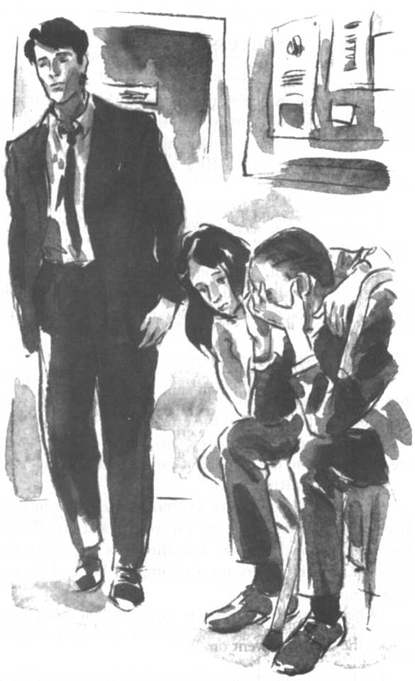

Listen to Part 1:
Tom đang ngồi tại một căn phòng trong đồn cảnh sát. Thanh tra Cảnh sát Finch đang ngồi ở phía đối diện anh. Một cảnh sát mặc đồng phục đứng gần cửa ra vào.
Thanh tra Cảnh sát hỏi: "Anh có biết Rita và Spooner đã đi đâu không?".
Tom đáp: "Tôi không biết". "Tôi sẽ không bao giờ được gặp lại Rita nữa.
Thanh tra Cảnh sát hỏi: "Tôi không hiểu anh. Tại sao anh để Spooner đưa Rita đi mất?".
Tom đáp: "Tôi đã không sáng suốt, thưa thanh tra". "Rita cần đến sự giúp đỡ của tôi mà tôi đã không giúp cô ấy. Danny, bạn tôi, đã bảo tôi làm sai rồi nhưng tôi đã không nghe anh ấy. Giờ thì Rita đã đi mất. Còn tôi thì sắp phải ngồi tù."
Thanh tra Cảnh sát hỏi: "Ngồi tù à?".
Tom đáp: "Phải như vậy thôi, đúng không ạ?". "Anh bảo rằng...".
Thanh tra Cảnh sát nở nụ cười. "Không sao đâu, Tom. Tôi sẽ không bắt anh đâu. Anh chỉ ngu ngốc thôi, nhưng không phải tội phạm. Spooner mới là tội phạm.
Chúng tôi tin những gì anh kể lại. Anh không định trộm tiền của ngân hàng. Anh có thể về nhà rồi, Tom ạ.
Tom hỏi: "Còn Rita thì sao?".
Listen to Part 2:
Thanh tra Cảnh sát đáp: "Cô ấy phải tới gặp chúng tôi ngay lập tức. Chúng tôi phải hỏi cô ấy một số câu ở đây, tại đồn cảnh sát. Chúng tôi giúp được cô ấy nếu cô ấy giúp chúng tôi. Nhưng cô ấy phải tránh xa Spooner. Các cảnh sát hiện đang đang tìm kiếm cô ấy và Spooner.
Khi bắt được Spooner, anh hãy quay lại, thanh tra tiếp lời. Chúng tôi muốn anh trình bày hết mọi chuyện trước tòa.
Ra khỏi đồn cảnh sát, Tom gặp Shana và ông Tatchi. Tay cô bé đặt trên vai cha mình. Những giọt nước mắt lăn dài trên gương mặt ông Tatchi.

Ra khỏi đồn cảnh sát, Tom gặp Shana và ông Tatchi.
Ông Tatchi nói: "Ôi chao, tôi đã ngu ngốc thế nào!". "Tôi đã tìm cách ép con gái mình lấy Bungo. Và thế là bây giờ thì Rita bỏ đi rồi, cảnh sát đang tìm kiếm cô ấy.
Shana đáp: "Thôi nào, cha ạ". "Mình về nhà thôi.
———
Hai tháng sau, Tom làm việc rất chăm chỉ. Ban ngày, anh làm việc tại thư viện. Ban đêm, anh học cho các kỳ thi của mình. Việc học thật tẻ nhạt nhưng Tom muốn vào học đại học. Và việc học cũng giúp anh bớt nghĩ về Rita.
Ông Cutter rất hài lòng. Ông vui mừng thấy Tom đang học hành chăm chỉ. Nhưng mẹ của Tom thì lo lắng cho anh.
Listen to Part 3:
Bà bảo: "Thằng bé trông vẫn có vẻ buồn thế".
Một hôm, Danny gọi điện đến cơ quan tìm Tom. Nghe giọng anh ấy có vẻ rất mừng rỡ.
Anh ấy nói với Tom: "Mình có tin về Rita rồi".
Tom nhanh nhảu đáp lại: "Mình không muốn nghe đâu, Danny ạ". "Anh đã hứa không nhắc đến cô ấy mà."
Danny đáp: "Nhưng Tom——".
Tom đáp: "Thôi mà, Danny, đừng nói nữa".
Mùa hè trôi qua thật chậm chạp đối với Tom. Anh làm việc trong thư viện, vẽ tranh và học. Vào tháng sáu, anh đã dự thi. Danny nhiều lần tìm cách báo tin tức về Rita cho Tom. Nhưng Tom không muốn lắng nghe.
Cuối tháng tám, Tom nhận được kết quả thi. Anh đã đỗ các kỳ thi với điểm rất cao. Giáo sư môn nghệ thuật và nhiếp ảnh ở trường đại học đã gọi điện đến để chúc mừng Tom.
Vị giáo sư bảo: "Chúc mừng anh, Tom! Chúng tôi rất vui khi biết anh đã đủ điều kiện vào học khoá học. Chúng tôi tin rằng anh sẽ học tốt. Khóa học của anh sẽ bắt đầu vào tuần tới. Thứ sáu tuần này sẽ có tiệc chào đón tất cả sinh viên mới.
Vào sáng hôm đó, Shana đến thư viện. Tom nhìn thấy cô bé bước qua cửa vào thư viện. Anh nhanh chóng nấp sau kệ sách. Anh thích Shana nhưng không muốn nhận bất kỳ tin tức nào về Rita. Tin tức về Rita chỉ làm anh thêm buồn rầu.
Listen to Part 4:
Shana đi khỏi rồi, Tom mới quay về chỗ làm việc của mình. Shana để trên mặt bàn làm việc của Tom một bản sao tờ Silverton News (Tin tức Silverton). Trên trang nhất của tờ báo là ảnh của Rita. Tom nhìn thấy dòng chữ: CÔ GÁI SILVERTON VÀ NGÔI SAO THỜI TRANG. Anh ném tờ báo xuống đất. Anh không muốn đọc bất cứ thứ gì về Rita và Spooner.
Vài phút sau, Danny bước vào thư viện. Danny cũng đã đỗ các kỳ thi. Anh ấy đang mỉm cười.
Danny bảo: "Vậy là chúng ta sẽ cùng vào học tại Silverton College, Tom ạ. Tuyệt không nào?".
Tom đáp: "Vâng, mình nghĩ vậy,".
Nhưng trông bạn buồn quá vậy, Tom?, Danny hỏi. "Có chuyện gì thế? Bạn không vui à?".
Tom nói rất nhanh: "Có chứ".
Danny nói: "Mà này", "mình đến đây là để bàn về bữa tiệc mà".
Tom hỏi: "Bữa tiệc chào đón các sinh viên mới vào thứ sáu phải không?".
Danny đáp: "Đúng vậy đó", . "Đó là bữa tiệc "sắm vai" ấy. Ai cũng mặc đồ hóa trang. Bạn phải hóa trang thành một nhân vật phim nổi tiếng."
Tom hỏi: "Thật à?".
Listen to Part 5:
Danny đáp: "Đúng thế. Và bạn phải đeo mặt nạ che mặt. Bạn chỉ được gỡ mặt nạ ra sau nửa đêm.
Tom đáp: "Nghe ngốc nghếch thế!".
Danny đáp: "Không đâu! Mình nghĩ là sẽ vui lắm". "Mọi người đều bảo là các bữa tiệc ở trường đại học rất tuyệt vời. Đây cũng là cơ hội để chúng ta làm quen với các sinh viên khác trong trường.
Tom lắc đầu. "Mình chán lắm nếu không đi cùng Rita," anh bảo.
Danny đáp: "Ôi, làm ơn đến đi mà, Tom!". "Thứ sáu là sinh nhật bạn đấy. Vào sinh nhật, bạn không thể ở trong nhà suốt được.
Tom nói: "Nhưng mình không có đồ hóa trang mà". "Mình có thể hóa trang thành ai đây?".
Danny nói: "Đừng lo". "Mình sẽ kiếm cho bạn đồ hóa trang. Mình biết có người may đồ.".